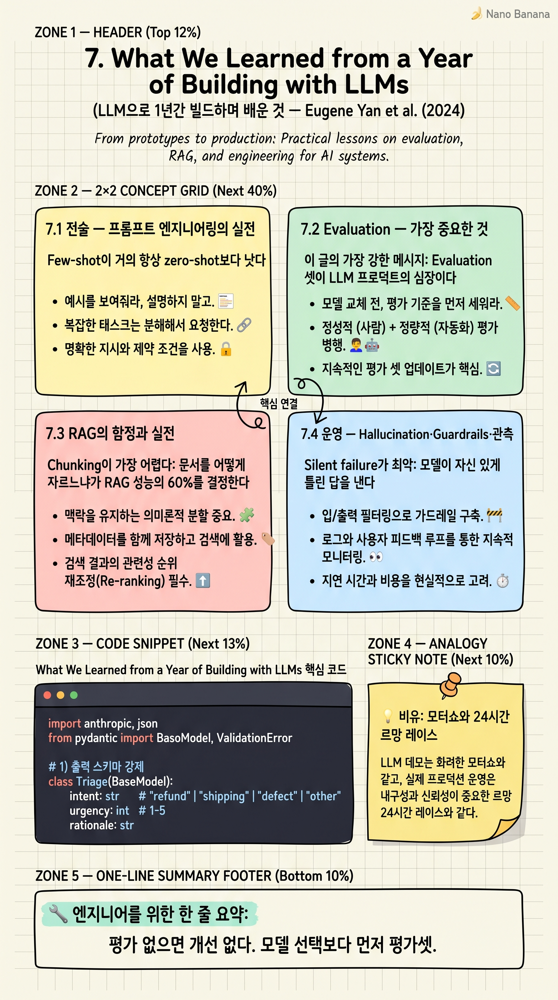

What We Learned from a Year of Building with LLMs

🎯 학습 목표
- 프롬프트 엔지니어링의 진짜 모범 사례를 안다
- Evaluation이 왜 LLM 프로덕트의 심장인지 이해한다
- RAG 실무의 함정과 회피법을 안다
- LLM 시스템 운영에서 무엇을 모니터링하는지
- '데모는 쉽다, 프로덕션은 어렵다'의 의미를 구체적으로 안다
Eugene Yan, Bryan Bischof, Charles Frye, Hamel Husain, Jason Liu, Shreya Shankar 여섯 명이 2024년 6월에 O'Reilly에 공동 발표한 시리즈. 각자 1년간 LLM으로 프로덕트를 만들고 운영하며 배운 교훈을 전술·운영·전략 세 부분으로 나눠 정리했다.
이 글이 특별한 이유: 학계가 아니라 현장이다. 데모 영상은 쉽다. 평일 새벽 3시에 모델이 이상한 답을 내고 SLA가 깨졌을 때 무엇을 하는가가 진짜 문제다. 이 글은 그 진짜 문제들에 대한 매뉴얼에 가깝다. AI 시대 엔지니어가 가장 빨리 읽어야 할 단일 문서다.
핵심 내용
7.1 전술 — 프롬프트 엔지니어링의 실전
Few-shot이 거의 항상 zero-shot보다 낫다. 좋은 예시 3-5개가 긴 설명보다 모델 동작을 더 강하게 정렬한다.
구조화된 출력: free-form 텍스트 받지 마라. JSON schema, XML 태그, 명시적 키-값으로 제약하라. 파싱 안정성 + 모델 정확도 동시에 올라간다.
Chain-of-thought를 강요: 'think step by step' 한 줄이 정확도 두 자릿수 끌어올리는 케이스가 많다. 더 좋은 건 '먼저 reasoning을, 그다음 답을' 같은 명시적 단계 분리.
RAG > fine-tuning, 거의 항상: 새 지식 주입은 fine-tuning이 아니라 RAG로 해라. 빠르고, 디버그 가능하고, 갱신 쉽다. fine-tuning은 동작 양식을 바꿀 때만.
작은 모델 + 좋은 프롬프트 > 큰 모델 + 게으른 프롬프트: 비용·지연·통제 모두 압승.
7.2 Evaluation — 가장 중요한 것
이 글의 가장 강한 메시지: Evaluation 셋이 LLM 프로덕트의 심장이다. 평가가 없으면 개선도 없다.
LLM-as-a-judge: 출력을 또 다른 LLM이 채점. 빠르고 싸지만, 그 judge LLM의 편향과 일관성을 따로 검증해야 한다.
Reference-free evals: 사람이 라벨링한 정답이 없어도 평가 가능 — 'is this answer grounded in the retrieved context?' 같은 질문.
프로덕션 트래픽 샘플링: 실제 사용자 쿼리를 매주 N개 샘플링해서 회귀 셋에 추가. 정적 벤치마크는 곧 의미를 잃는다.
A/B 테스트가 답이지만 어렵다: LLM 출력은 비결정적이라 A/B 분석이 까다롭다. 따로 통계 디자인 필요.
7.3 RAG의 함정과 실전
Chunking이 가장 어렵다: 문서를 어떻게 자르느냐가 RAG 성능의 60%를 결정한다. 너무 짧으면 맥락 손실, 너무 길면 관련 없는 정보 섞임. 도메인별로 다른 chunking 전략이 필요하다. 매뉴얼은 섹션 단위, 코드는 함수 단위, 채팅 로그는 turn 단위.
Hybrid retrieval: 벡터 검색만으로는 약하다. BM25(키워드) + 벡터 + reranker의 조합이 거의 항상 압도적이다.
Reranking이 마법: top-100을 retrieval하고 cross-encoder reranker로 top-5만 추리는 게 LLM context 효율을 끌어올린다.
Negative examples: 'retrieved되면 안 되는' 케이스들도 평가 셋에 넣어라. 그래야 false positive 잡힌다.
Metadata filtering: 사용자·시점·권한 필터를 retrieval 단에 강제. 이걸 LLM 후처리에 맡기면 보안 사고로 이어진다.
7.4 운영 — Hallucination·Guardrails·관측
Silent failure가 최악: 모델이 자신 있게 틀린 답을 낸다. 출력 신뢰도 표시 + 'don't know' 응답 허용이 필수.
Guardrails 계층화: 입력 단(프롬프트 인젝션 차단) + 출력 단(PII·toxic 콘텐츠 필터) + 의미 단(LLM이 정책 위반인지 판정). 한 단으로는 부족.
관측의 새 어휘: 기존 APM은 부족하다. token usage, latency p99, eval pass rate, retrieval recall, guardrail trigger rate — 모두 별도 메트릭으로 추적.
Trace 우선: 매 요청의 전체 trace(retrieval → context assembly → model call → guardrail)를 저장. 디버깅의 99%가 trace를 보는 일이다.
Cost monitoring: 토큰 비용은 빠르게 폭발한다. per-endpoint·per-user 비용 추적이 첫날부터 필요.
7.5 전략 — 무엇을 만들 것인가
No model before PMF: 모델 선택을 너무 일찍 하지 마라. 핵심 가치 가설을 검증할 수 있는 가장 단순한 모델로 시작.
Build vs Buy: 코어 차별화 영역 = build. 그 외 = buy (managed API). 자체 fine-tuning은 거의 항상 처음 6개월엔 ROI 안 나옴.
팀 구성: ML 엔지니어 + 백엔드 엔지니어 + 도메인 전문가 + 데이터 라벨러 4축이 필요. 한 명이 다 못 한다.
Data flywheel: 사용자 피드백을 평가 셋·학습 셋으로 자동 환류시키는 파이프라인이 진짜 moat다. 모델이 아니라 데이터·평가가 차별화.
Demo와 프로덕션의 거리: 데모는 100건 중 80건이 좋으면 된다. 프로덕션은 100건 중 99.9건이 좋아야 하고 나머지 0.1건이 폭탄이면 안 된다. 같은 시스템이 아니다.
💡 비유로 이해하기
모터쇼는 화려하다. 컨셉카가 빛나고, 미래가 다가오는 것 같다. 0-100km 가속, 최고 속도, 스타일. 디테일은 가렸다.
르망 24시간 레이스는 다르다. 같은 차로 24시간을 달려야 한다. 연비, 신뢰성, 정비 시간, 타이어 마모, 비 오는 트랙에서의 그립, 운전자 피로. 모터쇼의 우승작이 르망에서 1바퀴 만에 퍼져버린다. 르망의 우승작은 모터쇼에선 평범해 보인다.
LLM 시연 = 모터쇼. 프로덕션 운영 = 르망. 이 글의 저자들이 1년간 배운 것은 르망의 기술이다. 화려하지 않지만, 르망을 못 달리면 비즈니스가 안 된다.
💻 코드 예시
이 글이 강조하는 '구조화된 출력 + few-shot + 평가 셋' 워크플로의 미니어처. 프로덕션 LLM 호출이 어떻게 생겼는지의 표준 형태.
import anthropic, json
from pydantic import BaseModel, ValidationError
# 1) 출력 스키마 강제
class Triage(BaseModel):
intent: str # "refund" | "shipping" | "defect" | "other"
urgency: int # 1-5
rationale: str
# 2) few-shot 예시 — 평가셋과 공유
FEWSHOT = [
{"text": "내 카드 환불 아직?", "out": {"intent": "refund", "urgency": 4,
"rationale": "환불 지연 불만"}},
{"text": "이거 켜자마자 깨졌어요", "out": {"intent": "defect", "urgency": 5,
"rationale": "수령 직후 불량"}},
]
def triage(text: str) -> Triage:
client = anthropic.Anthropic()
examples = "\n".join(
f"User: {x['text']}\nJSON: {json.dumps(x['out'], ensure_ascii=False)}"
for x in FEWSHOT
)
msg = client.messages.create(
model="claude-opus-4-7",
max_tokens=300,
messages=[{"role": "user", "content":
f"{examples}\nUser: {text}\nJSON:"}],
)
raw = msg.content[0].text.strip()
try:
return Triage(**json.loads(raw))
except (json.JSONDecodeError, ValidationError) as e:
# 3) 실패는 평가셋으로 환류
log_for_eval(text, raw, error=str(e))
raise
# 4) 평가셋은 매주 프로덕션 샘플로 자동 보강
구조화된 출력(Pydantic 스키마) + few-shot 예시(평가셋과 공유) + 실패 로깅(평가셋 환류). 이 세 요소가 LLM 프로덕트의 '심장 박동'이다. 이 패턴 없이 free-form 텍스트로 받으면 파싱 오류·정확도 저하·디버그 불가 삼중고에 빠진다. 글의 핵심 권고가 이 한 함수에 응축돼 있다.
🏭 현업에서의 평가
✅ 시니어가 보는 것
- Evaluation 셋을 코드처럼 버전 관리하는지
- Hallucination 대응 layer를 구체적으로 설명할 수 있는지
- Token 비용·지연·정확도의 트레이드오프를 양적으로 다루는지
- Trace 중심의 디버깅 워크플로를 갖고 있는지
⚠️ 레드 플래그
- '프롬프트 잘 짜면 된다'에서 멈추는 인식
- 프로덕션에 LLM-as-a-judge를 사람 검증 없이 전적으로 의존
- Eval 셋이 정적이고 6개월간 갱신 안 됨
- 모델만 바꾸면 다 해결될 거라는 기대
🎤 예상 인터뷰 질문
- 당신 시스템의 evaluation set을 어떻게 구성·갱신하시나요?
- Hallucination을 줄이기 위해 input·output·meaning layer 각각에서 무엇을?
- RAG에서 retrieval recall이 떨어졌을 때 진단 절차를 설명해 주세요
✨ 핵심 요약
Eval이 심장
평가 없으면 개선 없다. 모델 선택보다 먼저 평가셋.
Few-shot + 구조화 출력
정확도·파싱·디버그 모두 개선.
RAG > Fine-tuning, 거의 항상
지식 주입은 RAG, 양식 변경은 fine-tuning.
Hybrid retrieval + reranker
벡터 단독은 약하다. BM25 + 벡터 + reranker.
Guardrails 계층화
입력·출력·의미 세 단. 한 단으로는 부족.
Silent failure 인지
틀린 답을 자신 있게 — 가장 무서운 실패 양식.
Trace 우선 관측
디버깅의 99%가 trace에서 끝난다.
Demo와 프로덕션은 다른 종목
80% vs 99.9%. 같은 시스템 아님.